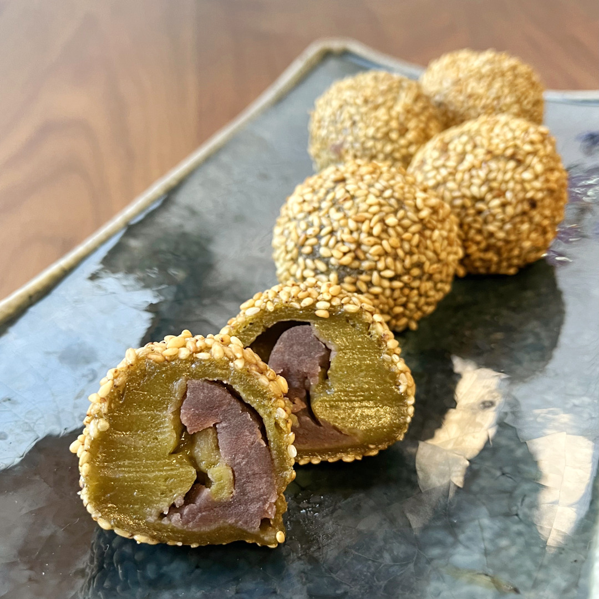

白玉粉で作る
もちっとした食感が美味しい
ゴマ団子レシピをご紹介。
よもぎ餅のような味わいの
ちょっと大人の和菓子を
作ってみませんか？
材料
| A： 白玉粉 60ｇ | ＜タレ＞ |
| A：グラニュー糖 大さじ１（15ｇ） | こしあん 60ｇ |
| A：◆クワンソウパウダー ３ｇ | 白ごま 25ｇ |
| 菜種油 4ｇ | |
| 水 50ｃｃ | |
作り方
1.ボウルにＡの材料を入れ、菜種油と水を少しずつ加えてこねていく。
2.耳たぶ位の固さになったら6等分に分けて丸める。
3.ふちが薄くなるように円形にのばしていく。
4.丸めたあんこ10ｇを③の中央に乗せて包み、とじ目をしっかりとくっつける。
5.全体を水でぬらしてから、白ごまをまぶす。
6.180℃の油に入れたら、時々転がしながらきつね色がつくまで5～7分ほど揚げる。
※レシピの無断転載等は固くお断りさせて頂きます。